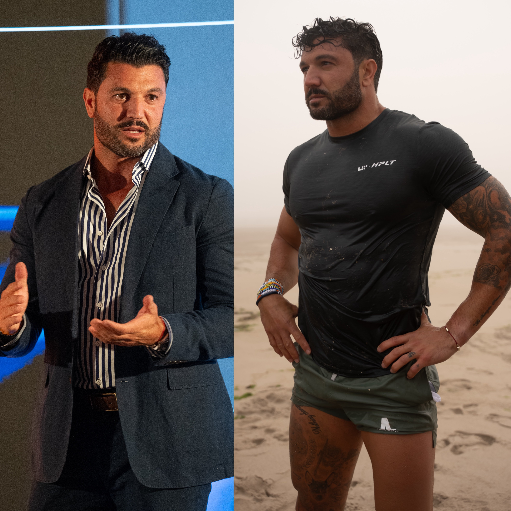

Photo: @montes.way via instagram
High Performance Lifestyle Training and founder Brian Mazza are on a mission to reshape community-based fitness.
Danielle Bitts
May 22, 2025
It’s not often you find yourself sitting in a room with fellow elite athletes; individuals who willingly spend their free time working out, listening to podcasts on longevity, and taking phone calls from the sauna. They snub their nose up to a meal without protein and you won’t find alcohol as part of their nightly routine. They take care of their bodies; their health, to ensure that they come prepared to tackle the tasks of everyday life. These humans are a rarity – these humans are high performers.
What’s more impressive about this group is less so centered on their commitment to a daily wellness routine but the sheer pursuit of adversity and challenges. They’ve cracked the formula on equipping themselves with the skills needed to not only cope, but persevere when life’s inevitable hardships come knocking. The equation includes things like getting your a** kicked by a former Navy SEAL, going on training runs through various cities, and talking shop with the health and fitness industry’s top experts. There’s breathwork, open discussions about trauma and emotional intelligence, and the best part? Everyone drops their ego at the door.
I had the opportunity to attend a four-day event hosted by High Performance Lifestyle Training (HPLT), a community-centric fitness brand started by Brian Mazza in 2018, and I’m here to say he’s on the path that consumers in health and fitness are not only seeking, but demanding.
“HPLT began as a deeply personal mission,” said Mazza. “At first, I was simply chasing something I lost in adulthood—the sense of team, of shared struggle, of pushing toward something greater with people who had your back. That changed after our very first summit with David Goggins. It became clear that everyone there was searching for the same thing: a tribe willing to suffer, grow, and rise together.”

Brian Mazza started HPLT in 2018 and makes it a point to participant in each summit’s events.
The event would also mark the first integrated Life Time x HPLT experience after Life Time acquired Mazza’s brand in Spring of 2025, a momentous leap to bring the event to a larger audience.
It’s become tradition to kick off each HPLT weekend wet, cold and face down in the sand. This beach visit doesn't include hot dogs or a pigskin but rather two men screaming in your face before you’ve fully opened your eyes. The bus left Manhattan promptly at 5 a.m. and arrived in Rockaway Beach by six. As athletes shuffled onto the sand, dressed in matching, sponsored apparel, Ray “Cash” Care and Ronnie Garcia, two Navy SEALs, instructed them to drop their bags and hit the water. For the next 60 or so minutes a group of men and women waded, ran and crawled in salt water while undergoing different drills. There was one where everyone held a high plank shoulder-to-shoulder while someone crawled under their torsos, another where they linked arms in the wash to perform synchronized situps. Nothing was off the table. At the end of the hour 20-plus sugar cookies boarded the bus back to refuel. Bodies were tired but trust was earned, and in that lies the reason for starting the weekend with this event.
Founder of the Mastery Experience, a daily breathwork and hypnosis brand, Francesca Sipma started her session by sharing her own personal journey of growth and discovery throughout the last decade. A former corporate burnout, Sipma expressed how integral breathwork became at a pivotal point in her life. She set out to study different practices embedded within different cultures over the last several years before eventually starting something of her own.
The 45-minute session (blindfolds included) included a 20-minute continuous cycle of breath patterns. A custom playlist flooded the surround sound speakers and as the melodies grew louder, so did Sipma. “In through your stomach, in through your heart, out through your mouth,” she instructed while urging participants to think through different prompts. These included visualizing loved ones, aspirations, and intentions ahead.
Once concluded, volunteers shared their experiences, some shedding a tear, or two, at awe in the emotional opening.
A grueling workout by design, its goal is to honor the courage, endurance, and selflessness of Lt. Michael P. Murphy, a U.S. Navy SEAL who was killed in action in Afghanistan in 2005. Originally called "Body Armor" by Murphy himself, it was one of his favorite workouts. After his death, CrossFit renamed it in his honor as "Murph." At HPLT, the teams completed the following:
1 mile run
100 pull-ups
200 push-ups
300 air squats
1 mile run
Ray Care was clear that the intent, or mission, was not about competing, but to recognize the significant sacrifice made by Murphy as they moved through the workout.
A 1.5 mile jog down 5th avenue would lead to the corner in Central Park where Mechelle Freeman awaited to put the group through a series of running drills and sprint intervals. Freeman was the 2007 World Champion, earning a gold medal in the 4x100m relay at the Championships in Osaka and secured silvers in both the 100m and 4x100m relay events at the Pan American Games. The next year she’d go on to compete in the Beijing Olympics, representing the United States in the same events.
Some shirts soaked, others removed completely, the humidity of a May morning in New York paid no favors to a workout designed by Freeman herself. The athletes paired in groups of two or more and sprinted under the pedestrian bridges and up walkway slants throughout the acreage of Manhattan’s largest park.
MB360 is a comprehensive mind-body fitness program developed by Jessie Syfko, a certified strength and conditioning specialist and Life Time’s Vice President of Group Training and Studio. Jessie is also one of the mastermind’s behind the HPLT partnership and works closely with Mazza as they enter a new era of experience. The MB360 program integrates functional strength training, mobility work, breathwork, and meditation to enhance both physical performance and mental well-being.
This workout beautifully combines the centering of breath, the restoration of yoga and mobility, the challenge of time under tension and the power of strength. To say this hour hits essentially everything you need from a sweat session is an understatement.
The weekend was a revolving door of masterclass-like presentations where leaders across health, wellness, fitness and business shared their stories, findings and insights as to how they got to where they are today, and the qualities that helped them stand out against the rest. While the following only merely highlighted some of the keynote speakers, the event displayed an overall added benefit of networking and exchanging information for both attendees and presenters.
The weekend kicked off Thursday evening with a welcome event in Life Time’s newest NYC space located on 5th Ave. Founder, Chairman and CEO Bahram Akradi addressed the group and shared the story of his beginning in the health and fitness industry. Now over three decades later, the brand has grown to nearly 180 clubs in the U.S. + Canada with no signs of slowing down. He most notably spoke on the need for leaders to adapt to situations like shut down of operations in 2020 and the everchanging landscape of AI. The ability to both adapt and lead with love stood out as Akradi’s winning strategy.
I’ve been familiar with James Lawrence since the debut of his first documentary in 2016, “Iron Cowboy: The Story of the 50.50.50.”. Admittedly it played a role in my decision to get into triathlons. His unworldly record breaking endeavors have landed him on the map as one of the greatest, if not greatest endurance athletes of all time. He upped the ante and completed 101 full “Ironman” triathlons in 101 days because well, 50 just wasn’t enough. James spoke on mental resilience, pushing past pain, and believing that the answer is you’re looking for is merely a moment away. His faith propels both him and his family to continue to strive for excellence in a world where mediocrity is far too often accepted.
A fireball sure to light up any room, Megan Dolce keeps people accountable for their actions — or lack thereof. She founded and operates a leadership development company pushing individuals, teams and businesses to their full potential in business, life and beyond. Megan spoke on multiple theories she enacts with her clients including the “gear theory”, referencing zones located in a total of six gears and how transitioning between them throughout your days, weeks, months and years will lead to sustainability. Her sheer presence commanded the room, and the room was left better for it.
Global Head of Human Performance, Principal Scientist at WHOOP, and former member of the U.S. National Field Hockey Team Kristen Holmes is no stranger to excellence. She’s in the history books as one of the most successful coaches in Ivy League history, having won 12 league titles in 13 seasons and the first national championship ever for Princeton University. Now entering her ninth year with wearable tech leader WHOOP, she works as a psycho-physiologist focusing on testing sleep, circadian, recovery and training behaviors and how they can impact measures of physiological and psychological resilience.
Holmes’ session went well over the allotted time due to the sheer volume of questions incoming from the audience. She insisted on the importance of circadian rhythm consistency, noted the most detrimental habits on sleep, and shared insights from nearly a decade’s worth of research. She’s on a mission to help people live longer, healthier lives, placing emphasis on healthspan versus simply lifespan.
Dr. Yael Joffe, PhD, RD, FACN, is a globally recognized expert in nutrigenomics—the study of how nutrition interacts with genes to influence health. With over two decades of experience, she has been instrumental in advancing personalized, DNA-based approaches to nutrition and wellness. Dr. Joffe began her career as a dietitian and later earned her PhD in Nutrigenomics from the University of Cape Town, focusing her research on the genetics of obesity. Her personal journey into genetics was inspired by the loss of her grandmother to cancer, which led her to seek more proactive and personalized healthcare solutions.
In 2018, Dr. Joffe founded 3X4 Genetics, where she serves as Chief Science Officer. The company offers a DNA testing platform that provides personalized health insights based on genetic variations, aiming to empower individuals to make informed health decisions. In her time with the HPLT group, she broke down the difference between genetics and epigenetics and how are daily decisions in things like nutrition, exercise, sleep, stress and environment all play an incredibly massive role in how our gene expressions change over time — for better or worse.
From the outside looking in, it’s easy to assume that HPLT is a male-dominated operation, especially if you’re looking back at its early adoption, though if you ask Brian the secret to his success in life, work and everywhere in between- he’ll credit his “arsenal of weapons” — Chloe, his wife and his two business partners, Melissa and Jessie.
Chloe Melas Mazza is a journalist and correspondent for NBC breaking the biggest stories in entertainment news. Melissa Westphal is most notably known as the heart and soul of HPLT. Having been with the brand for three years across 11 events, she ensures the experiences go off without a hitch. While the newest addition to Mazza’s roster, Jessie Syfko has made an immediate impact to HPLT through the formation of Life Time’s acquisition and will continue to be a steward of the brand’s ethos as the partnership evolves.
As for attendees, HPLT has accumulated over 1,000 alumni and is inching towards 20 events. The community is stronger than ever, with life lasting relationships being formed each time a new crew comes together. Former attendees now train together, socialize, and even invest in one another’s companies. When not in the same cities, the group stays close across social media and preconceived chats created during the summits.
When asked what the coming months means for the powerhouse partnership, Mazza said, “Together, we’re expanding the playbook by launching more micro summits—high-intensity, one-day experiences designed for maximum impact. We’re kicking it off in a big way on July 26th, when we take over Surf Lodge in Montauk for our very first micro summit.”
Further information on the event is slated for the coming weeks.
“HPLT has become medicine for people—mind, body, and spirit. It’s more than a brand. It’s a reset button. A return to who you truly are, and a launchpad for who you’re meant to become.”
The future is bright for HPLT and its new partner in health, Life Time.